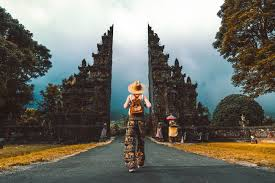

TentangWisataBali.com
TentangWisataBali.com
- Home
- Destination of Bali
- Contact
- Location
About Bali
Bali is one of the few places around the world where you can buy authentic Kopi Luwak one of the most expensive coffees in the world.
Kopi Luwak is collected from the droppings of the Luwak, a shy forest animal that prowls around coffee plantations eating coffee beans.
As the Luwak cannot digest the beans, they are collected in their droppings, having picked up a unique taste as a result of their journey through the Luwaks digestive system.
Bali has two different calendar systems the saka calendar, based on lunar cycles, and the 210-day pawukon calendar, said to originate from rice growing cycles.
Each year, to mark the start of the Saka year, the Balinese enjoy Nyepi, a public holiday encompassing total silence, meditation and fasting.
The entire island shuts down for the day, and no travelling, work or noise of any kind is permitted.
Balinese people will usually possess one of 4 first names: Wayan, Made, Nyoman or Ketut.
Translated, these mean "first born", "second born", "third born" and "fourth born".
The same names are given to both males and females.
Balinese babies are not allowed to touch the ground until they are three months old.
Until that point, their parents will carry them everywhere.
Bali has eight regencies: Badung, Bangli, Buleleng, Gianyar, Jembrana, Karangasem, Klungkung, and Tabanan.
Bali is home to 3 volcanoes; Mount Batur (5633ft/1717m), Mount Batukaru (6561ft/2000m) and Mount Agung (10,308ft/3142m).
Whilst Mount Batukaru is yet to erupt, Mount Batur erupted in both 1917 and 1927, and Mount Agung erupted in 1963.
In addition to beautiful white sandy beaches, Bali is also home to incredible black volcanic sand beaches, courtesy of the Islands aforementioned active volcanoes.
There are 4 lakes on the island of Bali; Lake Batur, Lake Beratan, Lake Buyan and Lake Tamblingan (ordered by size).
There are three main spoken languages on Bali: Balinese and dialects of, Indonesian, and Kawi, a type of old Javanese.
English is also widely spoken, though typically in tourist areas.